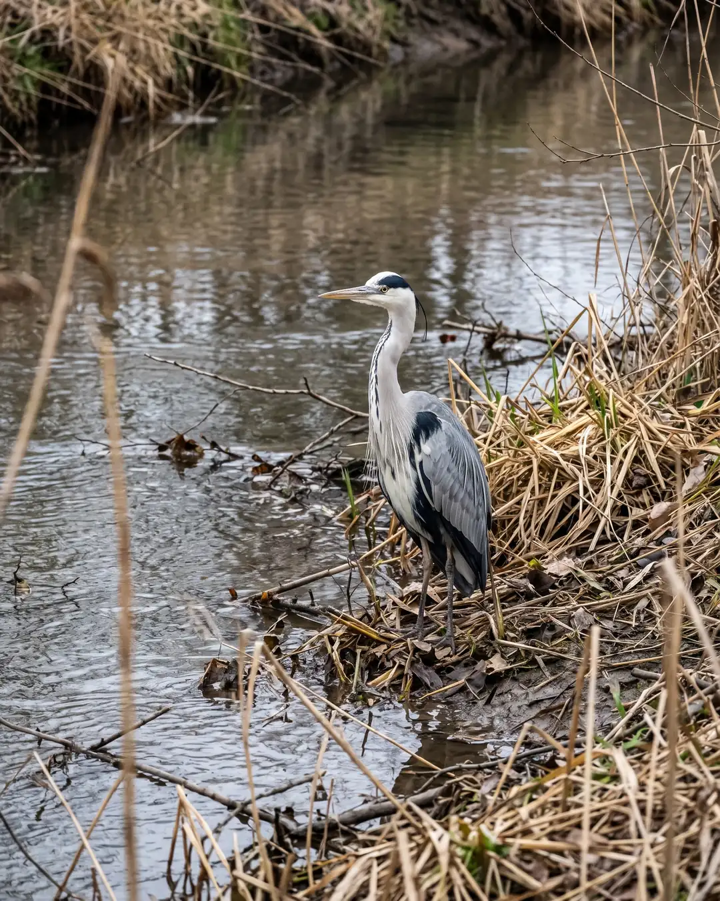
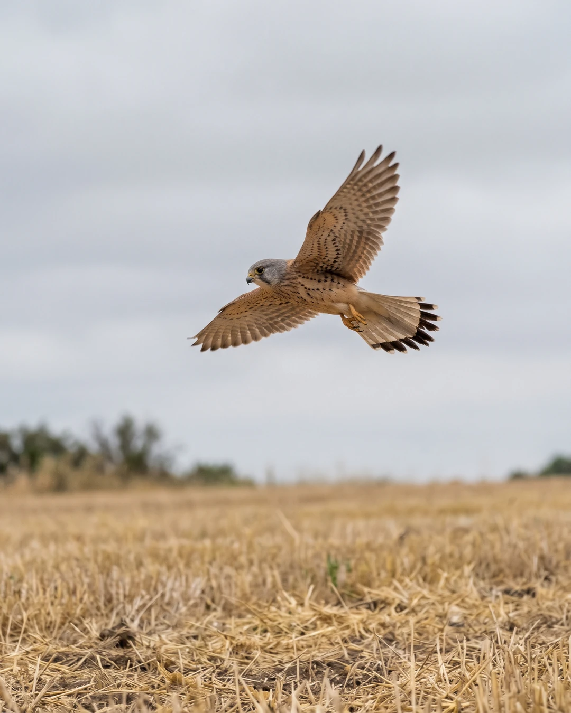
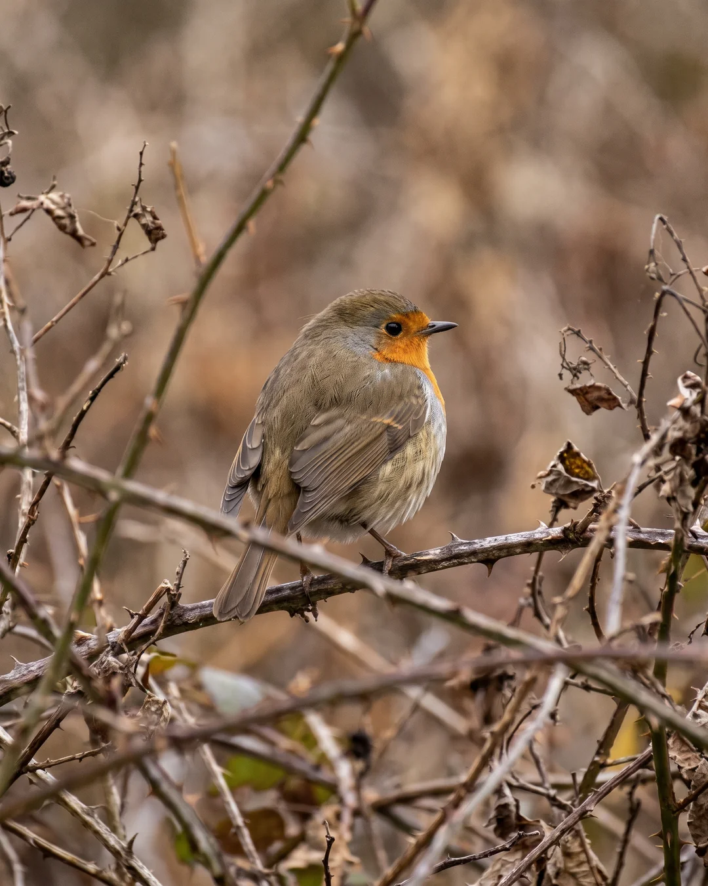

Caso n.º 15 · Aves
Sobre este caso
El caso n.º 15 está cerrado. Fue el caso diario del 15 de noviembre de 2026 y su tema fue Aves. Los detectives de aquel día tuvieron dos retos: cinco imágenes que clasificar en fotografías reales y generadas por IA, y cinco afirmaciones de una frase que clasificar en datos y bulos.
- Imágenes generadas por IA: 4 de 5
- Bulos: 2 de 5
Aquí tienes todas las respuestas. Cada imagen generada por IA trae el prompt que la creó, y cada afirmación, la verdad que hay detrás y los detalles que merece la pena recordar, para que compruebes qué se te escapó.
Uno de los bulos: «Existen especies de aves que cambian el color de sus ojos en función del clima.» La verdad: Ningún ave cambia el color del iris por el frío, el calor o la lluvia.
¿Quieres afinar la vista? Lee nuestra guía para detectar imágenes de IA o nuestra guía para detectar un bulo y luego juega el caso de hoy.
Imágenes
-
Imagen 1

IA
La confesión del sospechoso
Una garza real de pie en la orilla de un río poco profundo, con el agua algo turbia y juncos secos alrededor; luz de mañana nublada, teleobjetivo, colores apagados.
-
Imagen 2

IA
La confesión del sospechoso
Un cernícalo vulgar en pleno vuelo sobre un campo de cereal segado, captado con velocidad alta; ligera falta de nitidez en la punta de las alas y cielo gris pálido.
-
Imagen 3

REAL
Fotografía real
-
Imagen 4

IA
La confesión del sospechoso
Una urraca sobre un poste de valla de madera en el campo, con el cuerpo de lado y la cabeza girada; luz lateral de tarde, plumas negras con reflejos azulados sutiles y fondo de olivos desenfocado.
-
Imagen 5

IA
La confesión del sospechoso
Un petirrojo posado en una rama baja de un arbusto en invierno, fotografiado con teleobjetivo de 400 mm a f/5.6; plumas con detalle, fondo marrón desenfocado y alguna ramita cruzando por delante.
¿Dato o Bulo?
-
Afirmación 1
DATO «Ciertas aves rapaces propagan incendios forestales de forma deliberada.»
En Australia, el milano negro, el milano silbador y el halcón berigora llevan palos en llamas para provocar nuevos fuegos.
- Sueltan los palos sobre hierba seca para hacer huir a pequeños animales.
- Las comunidades aborígenes y los científicos las llaman «halcones de fuego».
-
Afirmación 2
DATO «El récord de vuelo ininterrumpido más largo es de 13.560 km sin detenerse.»
Una cría de aguja colipinta voló 13.560 km de Alaska a Tasmania en octubre de 2022 sin aterrizar.
- Voló 11 días y 11 noches sobre el Pacífico sin comer ni beber.
- El ave llevaba un transmisor por satélite que registró todo el viaje.
-
Afirmación 3
BULO «Existen especies de aves que cambian el color de sus ojos en función del clima.»
Ningún ave cambia el color del iris por el frío, el calor o la lluvia.
- En muchas especies, el color de los ojos cambia con la edad.
- La emoción o el cortejo pueden cambiar un momento la intensidad del color.
-
Afirmación 4
DATO «El halcón peregrino puede alcanzar los 350 km/h en vuelo en picado.»
Incluso los supera: es el animal más rápido del planeta, con picados de más de 389 km/h.
- Ese picado se llama «stoop» en inglés.
- Repliega las alas para adoptar una forma aerodinámica perfecta.
-
Afirmación 5
BULO «En la Estatua de la Libertad puede verse escondida la representación de un águila.»
La Estatua de la Libertad no esconde ningún águila ni otro animal en su diseño.
- Lleva una antorcha y una tablilla con la fecha de la independencia de EE. UU.
- Su corona tiene siete rayos y a sus pies hay cadenas rotas.